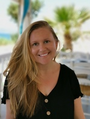
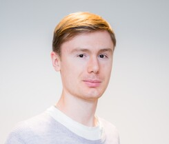

Christian L. Müller, Ph.D.
christian.mueller@helmholtz-muenchen.de
+498931873043
@microbionaut
muellsen
Principal Investigator, Helmholtz Zentrum München, LMU München, Flatiron Institute, New York
+498931873043
@microbionaut
muellsen
Christian L. Müller has been a group leader at the Institute of Computational Biology (ICB), Helmholtz München since 2019 and Professor for Biomedical Statistics and Data Science
at the Department of Statistics at LMU München.
Since 2014, he has been affiliated with the Simons Foundation, New York,
where he is currently a project leader in computational statistics at
the Center for Computational Mathematics (CCM), Flatiron Institute.
Christian studied computer science, bioinformatics, and poetry at Uppsala University, Sweden,
and the Univeristy of Tübingen, Germany and received his Ph.D. in computer science from ETH Zürich, Switzerland.
Christian held postdoctoral positions at ETH Zürich and NYU, and deeply cares about high-dimensional statistics, (non-)convex optimization,
shallow and deep learning, and their application on modern biological data. The secret life of microbes is holds a special place in Christian's
heart (and gut).
Johannes Ostner
johannes.ostner@helmholtz-muenchen.de
@JohannesOstner
johannesostner
Graduate Student, Helmholtz Zentrum München
@JohannesOstner
johannesostner
Johannes has a Master’s degree in Mathematics in Data Science from the Technical University of Munich (TUM).
For his thesis, Johannes worked with Benjamin Schubert
and Maren Büttner
to develop scCODA, a statistical model for compositional analysis of single-cell RNA sequencing.
Since then, he has extended his focus to compositional models for high-throughput sequencing data in general, exploring methods that can be applied
to both single-cell and bulk RNA sequencing data. Johannes is experienced in compositional statistics and Machine Learning techniques, and has an
ever-growing expertise in RNA sequencing analysis methods.
Outside of biostatistics, Johannes spends his time with swimming and biking, and volunteers as a swimming coach for kids.
Outside of biostatistics, Johannes spends his time with swimming and biking, and volunteers as a swimming coach for kids.

Mara Stadler
mara.stadler@helmholtz-muenchen.de
@StadlerMara
marastadler
Graduate Student, Helmholtz Zentrum München
@StadlerMara
marastadler
Mara has a Master’s Degree in Statistics from the Technical University of Dortmund.
In her master thesis she focused on statistical modeling of dynamic eye-tracking experiments.
Her research interests include dimensionality reduction, feature selection, regularization, and multivariate statistics.
She is currently analyzing large-scale proteomics data in collaboration with Dr. Till Bartke, where she is particularly interested in modeling combinatorial effects on a multiple readout.
Mara enjoys spending her free time skiing or hiking in the mountains or in her second home on Crete, where she grew up for a while.
She is currently analyzing large-scale proteomics data in collaboration with Dr. Till Bartke, where she is particularly interested in modeling combinatorial effects on a multiple readout.
Mara enjoys spending her free time skiing or hiking in the mountains or in her second home on Crete, where she grew up for a while.

Oleg Vlasovets
oleg.vlasovetc@helmholtz-muenchen.de
@ovlasovets
Vlasovets
Graduate Student, Helmholtz Zentrum München
@ovlasovets
Vlasovets
Oleg received his MSc degree in Data Science from a joint program of
Aalto University and
Eindhoven University of Technology.
His master thesis is focused on detecting anomalies of industrial vessel performance with Bayesian and
unsupervised statistical methods. His research interests are oriented toward optimisation theory, statistical
learning and network inference that can be applied in microbiology. In the BioDataScience Lab, Oleg works on causal
inference of gut microbiome and cardiovascular diseases.
Oleg has work experience in industry and his BSc degree in Business Informatics from HSE University with minor on Data Mining from Yandex.
He also enjoys solving machine learning problems from the business domain, e.g., participating in hackathons and Kaggle competitions. If you don’t find him doing one the activities above, you will probably find him on a tennis court.
Oleg has work experience in industry and his BSc degree in Business Informatics from HSE University with minor on Data Mining from Yandex.
He also enjoys solving machine learning problems from the business domain, e.g., participating in hackathons and Kaggle competitions. If you don’t find him doing one the activities above, you will probably find him on a tennis court.
Roberto Olayo Alarcón
Roberto.OlayoAlarcon@stat.uni-muenchen.de
@Scietwas
rolayoalarcon
Graduate Student, Institue of Statistics LMU
@Scietwas
rolayoalarcon
Roberto studied Genomic Sciences at the National Autonomous University of Mexico (UNAM).
Before joining our group, he worked with Dr. Robert Schneider
analyzing high-throughput experiments in order to dissect the effect of glucose starvation on cis-regulatory elements in human liver cells.
Broadly speaking, Roberto is very interested in the subject of antibiotic resistance and its intersection with microbial ecology. He makes use of high-throughput datasets to make new insights into the bacterial response to stress, particularly at the transcriptional level. He is very much at home with bioinformatics and the creation of pipelines and is currently expanding his statistical abilities. In our group, he is responsible for the StressRegNet project.
In his free time, Roberto enjoys cooking, cycling, and is currently learning German.
Broadly speaking, Roberto is very interested in the subject of antibiotic resistance and its intersection with microbial ecology. He makes use of high-throughput datasets to make new insights into the bacterial response to stress, particularly at the transcriptional level. He is very much at home with bioinformatics and the creation of pipelines and is currently expanding his statistical abilities. In our group, he is responsible for the StressRegNet project.
In his free time, Roberto enjoys cooking, cycling, and is currently learning German.